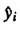
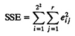

and the sum is entered under the column. The sums under each column are divided by 4 to give the following effects:
and the sum is entered under the column. The sums under each column are divided by 4 to give the following effects:
| Previous | Table of Contents | Next |
No experiment is ever a complete failure. It can always serve as a negative example.
—Arthur Bloch
One problem with 2k factorial designs is that it is not possible to estimate experimental errors since no experiment is repeated. Experimental errors can be quantified by repeating the measurements under the same factor-level combinations. If each of the 2k experiments in the 2k design is repeated r times, we will have 2kr observations. Such a design is called 2kr design. Once again, it is helpful to start with a two-factor model, develop all the concepts, and then generalize them to a k-factor model.
A 22r factorial design is used when there are two factors each at two levels and the analyst wants to isolate experimental errors. Each of the four experiments is repeated r times. Such a design allows us to add an error term to the model, which now becomes
| y = q0 + qAxA + qBxB + qABxAxB + e | (18.1) |
Here, e is the experimental error and the q’s are the effects as before.
The easiest way to analyze a 22r design is to use the sign table as before except that in the y column we put the sample means of r measurements at the given factor levels. The remaining analysis to compute the effects is the same as before. This is illustrated by the following example.
and the sum is entered under the column. The sums under each column are divided by 4 to give the following effects:
q0 = 41, qA = 21.5, qB = 9.5, qAB = 5
| TABLE 18.1 Analysis of a 223 Design | |||||
|---|---|---|---|---|---|
| I | A | B | AB | y | Mean 
|
| 1 | –1 | –1 | 1 | (15, 18, 12) | 15 |
| 1 | 1 | –1 | –1 | (45, 48, 51) | 48 |
| 1 | –1 | 1 | –1 | (25, 28, 19) | 24 |
| 1 | 1 | 1 | 1 | (75, 75, 81) | 77 |
| 164 | 86 | 38 | 20 | Total | |
| 41 | 21.5 | 9.5 | 5 | Total/4 | |
Once the effects have been computed in a 22r design, the model can be used to estimate the response for any given factor values (x-values) as follows:
 = q0 + qAxAi + qBxBi + qABxAixBi
Here is the estimated response when the factors A and B are at levels xAi and xBi, respectively.
The difference between the estimate and the measured value yij in the jth replication of the ith experiment represents the experimental errors:
eij = yij –  = yij – q0 – qAxBi – qABxAixBi
= yij – q0 – qAxBi – qABxAixBi
We can compute the error in each of the 22r observations. The sum of the errors must be zero. The sum of the squared errors (SSE) can be used to estimate the variance of the errors and also to compute the confidence intervals for the effects:
| TABLE 18.2 Computation of Errors in Example 18.2 | ||||||||||||
|---|---|---|---|---|---|---|---|---|---|---|---|---|
| Effect | Estimated | Measured | ||||||||||
| Response, | Responses | Errors | ||||||||||
| I | A | B | AB | |||||||||
| i | 41 | 21.5 | 9.5 | 5 | 
| yi1 | yi2 | yi3 | ei1 | ei2 | ei3 | |
| 1 | 1 | –1 | –1 | 1 | 15 | 15 | 18 | 12 | 0 | 3 | –3 | |
| 2 | 1 | 1 | –1 | –1 | 48 | 45 | 48 | 51 | –3 | 0 | 3 | |
| 3 | 1 | –1 | 1 | –1 | 24 | 25 | 28 | 19 | 1 | 4 | –5 | |
| 4 | 1 | 1 | 1 | 1 | 77 | 75 | 75 | 81 | –2 | –2 | 4 | |

| Previous | Table of Contents | Next |